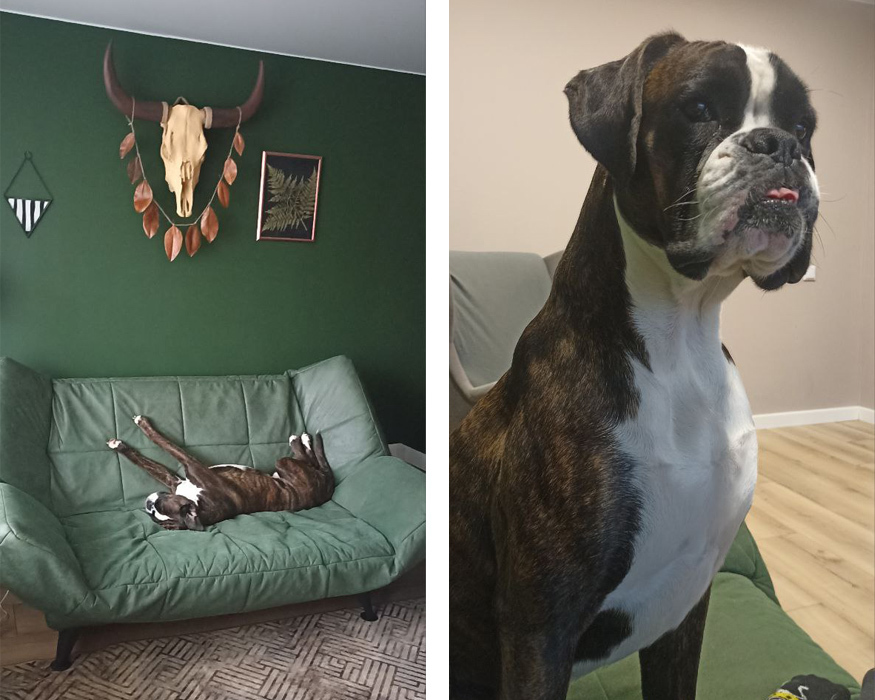
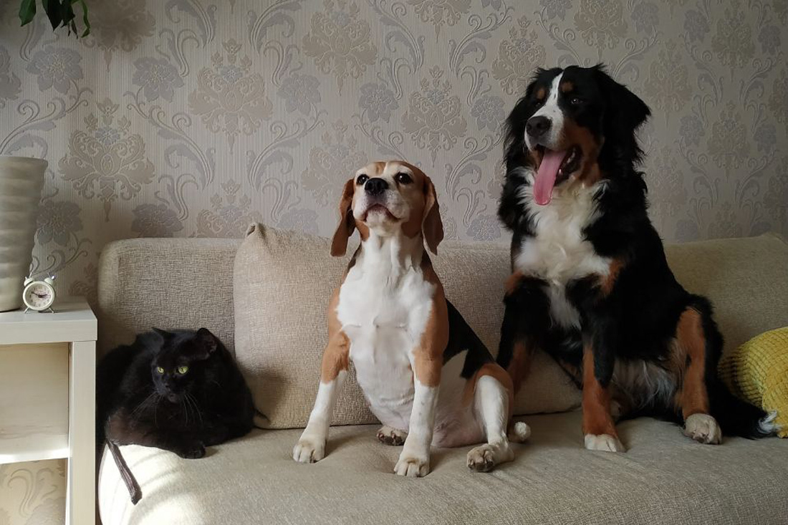

Согласно данным какого-то американского социологического опроса, владельцы собак называют себя «очень счастливыми людьми» в два раза чаще, чем владельцы кошек. Жаль, у респондентов ничего не спросили о том, во сколько им это счастье обходится. Насколько дорого содержать крупного пса в Беларуси? Этот вопрос мы задали читателям. Оказалось, кроме обычных трат, могут быть и внезапные: иногда приходится менять мебель и бытовую технику.
Давайте сразу определимся и не будем уточнять каждый раз: многие владельцы породистых собак раз в год:
Наталья вместе с 2-летним боксером Дукалисом живут в однокомнатной квартире в Жодино. Девушка говорит, что ее Дукалис — это 30 килограммов счастья, радости и шерсти. Вместе с боксером в жизни Натальи появились новые поводы потратить деньги.
— От Дукалиса очень много шерсти, его жесткий короткий ворс забивается в ткань — в одежду, пледы, диван. Пришлось купить новый диван с более плотной обивкой. Стиральная машина не может отстирать ткань от шерсти, зато сушильная машина хорошо ее выдувает, пришлось купить ее. Мой робот-пылесос перестал справляться, поэтому взяла новый. Еще пес сгрыз угол гипсокартонной стены — из-за этого сделали мелкий ремонт.Итого незапланированные траты — новый диван за 1200 рублей, пылесос за 130, сушилка за 1200 — примерно 2,5 тыс. за все. А вот в обычное время уходит только 150 рублей в месяц на корм.
Кристина с детства мечтала о домашних животных, но родители не разрешали. В итоге, повзрослев, она стала исполнять свою мечту. У Кристины уже были доберман и ротвейлер. Сейчас у нее британский кот, собаки бигль и бернский зенненхунд, а также рыбки. Пока все вместе живут в минской двушке, но вот-вот переедут в двухэтажный дом.
Еще до появления Ямми Кристина читала на сайтах совет: несколько раз подумать, прежде чем брать себе бигля, потому что это порода с характером. Но женщине казалось, что раз у нее уже был опыт воспитания двух собак, то она справится. Тем более что очень хотелось именно бигля. Она красивая, вот только живет по своим правилам. За 10 лет характер Ямми не поменялся, хотя была надежда, что собака станет спокойнее.
— Как же вы решились на вторую собаку? — Мне хотелось компенсировать все это другой собакой, послушной. Поэтому через пять лет мы взяли бернского зенненхунда Чампи. Она умничка, вылечила мои нервы. Она уже в 4 месяца поняла, что ходить в туалет нужно только на улице, а нашему биглю уже 10, и он до сих пор делает лужи в доме. И до сих пор грызет вещи. Буквально на днях Ямми залезла на стол и съела палочки для суши — многоразовые, красивые. Недавно она ухватила косметичку моей дочери и сгрызла все, что там было: крема, карандаши.Все плохо? Нет. Кристина говорит, что любит всех и что можно брать еще одно животное, тем более что скоро переезжать в большой дом.